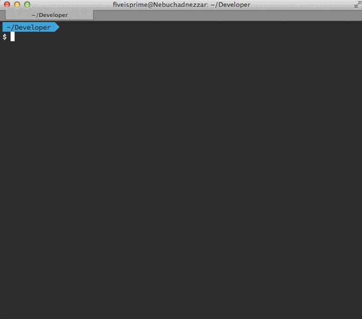

A pluggable command line scraper with REPL support.
A pluggable command line scraper with REPL support.
Usage: screpl <url>
Options:
-h, --help output usage information
-V, --version output the version number
-r, --require <module> require a plugin module
Pass a URL to SCREPL then use the $ variable as a JQuery object.

$ screpl http://example.com --require examples/plugin.js
request loaded with 200
use the variable `$` to access the result
> $('body').html()
'\n<div>\n <h1>Example Domain</h1>\n <p>This domain is established to
be used for illustrative examples in documents. You may use this\n
domain in examples without prior coordination or asking for permission.
</p>\n <p><a href="http://www.iana.org/domains/example">More
information...</a></p>\n</div>\n'
>
Check out the plugin example in the examples directory. Require plugins using
the --require option.
$ screpl http://example.com --require examples/plugin.js
request loaded with 200
use the variable `$` to access the result
> getText()
> links.text()
Variables and functions exposed through plugins will autocomplete.
Copyright (c) 2014, Matt Hernandez matt@modulus.io
Permission to use, copy, modify, and/or distribute this software for any purpose with or without fee is hereby granted, provided that the above copyright notice and this permission notice appear in all copies.
THE SOFTWARE IS PROVIDED "AS IS" AND THE AUTHOR DISCLAIMS ALL WARRANTIES WITH REGARD TO THIS SOFTWARE INCLUDING ALL IMPLIED WARRANTIES OF MERCHANTABILITY AND FITNESS. IN NO EVENT SHALL THE AUTHOR BE LIABLE FOR ANY SPECIAL, DIRECT, INDIRECT, OR CONSEQUENTIAL DAMAGES OR ANY DAMAGES WHATSOEVER RESULTING FROM LOSS OF USE, DATA OR PROFITS, WHETHER IN AN ACTION OF CONTRACT, NEGLIGENCE OR OTHER TORTIOUS ACTION, ARISING OUT OF OR IN CONNECTION WITH THE USE OR PERFORMANCE OF THIS SOFTWARE.